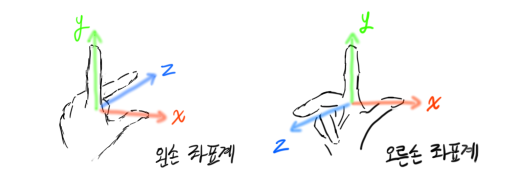
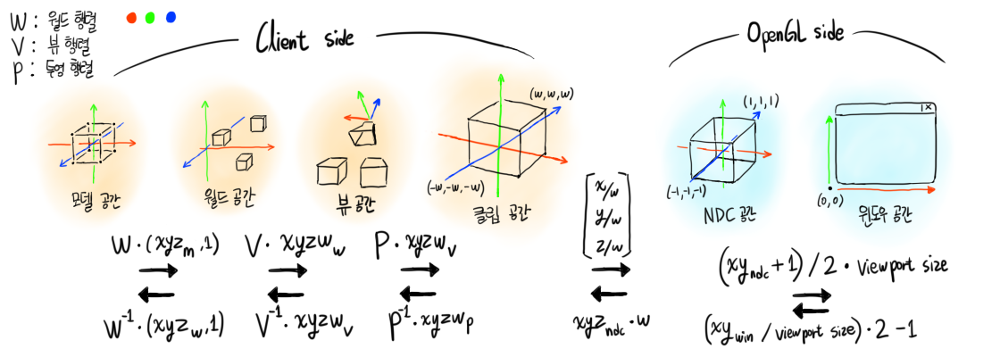
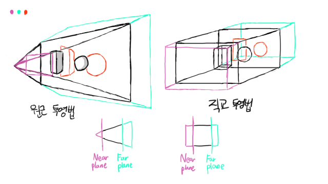
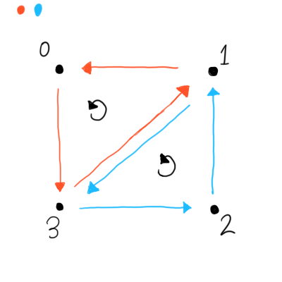
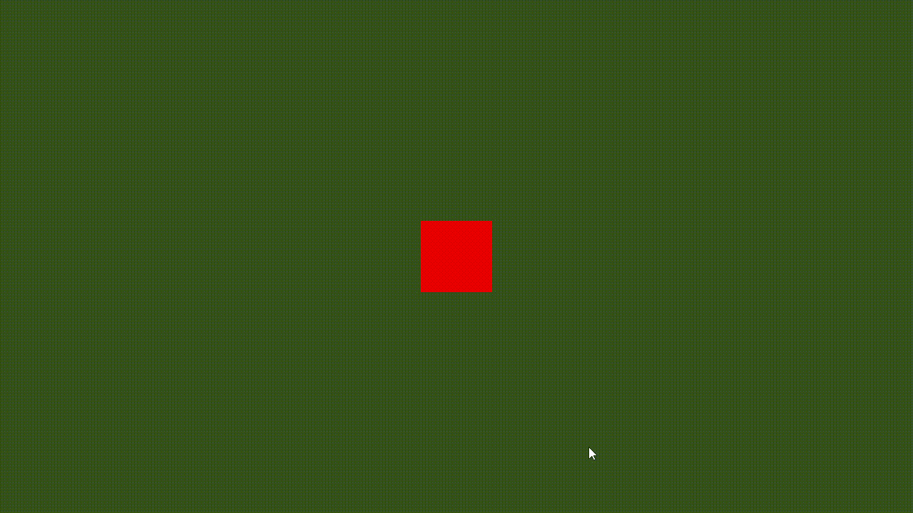

04. 좌표계와 WVP행렬
목차
- OpenGL의 좌표계
- 모델, 월드, 뷰, 클립 공간 간의 변환
- glm 라이브러리 소개
- 월드 행렬 // (트랜스폼)
- 뷰 행렬
- 투영 행렬 // (원근 나누기, [near, far] 범위 안의 z값을 [-1, 1]로 만들어야 함)
- 2D 렌더러 구현하기 // (삼각형+사각형 크기조절가능 렌더링, 셰이더 유니폼 설명 및 색 바꾸기)
OpenGL의 좌표계
컴퓨터 그래픽스에서 좌표계(Coordinate System)이란,
3차원의 점이 표현되는 데카르트 좌표계를 뜻합니다.
보통의 수학 / 물리학에서 사용하는 좌표계는
Z축이 위를 향하고, Y축이 오른쪽, X축이 앞을 향합니다.
OpenGL에서 사용되는 좌표계는 무엇일까요?
바로 '왼손 좌표계'와 '오른손 좌표계' 입니다.
왼손의 엄지, 검지, 중지만을 편 상태로
검지로는 위를 향하고 엄지를 오른쪽을 향하면
Z축 중지가 뒤를 향하는 왼손 좌표계가 됩니다.
또 그걸 오른손으로 해보면
중지가 앞을 향하는 오른손 좌표계가 됩니다.

모델, 월드, 뷰, 클립 공간 간의 변환
OpenGL에서 스크린에 무언가를 그리기 위해서는,
저희가 가진 정점들을 적절한 공간(=좌표계)의 정점으로
변환해줄 필요가 있습니다.
OpenGL에서 차례로 변환되는 좌표계를 순서대로 나열하면 다음과 같습니다.
| 좌표계(공간) 이름 | 좌표계 방향 | 범위 | 설명 |
|---|---|---|---|
| 모델 공간(Model Space) | 직접 정의(ex: Blender 프리셋 등) | 실수 범위(3차원) | 3D 모델의 정점들이 표현되는 좌표계. 사용한 3D 모델링 툴에 따라 다를 수 있음 |
| 월드 공간(World Space) | (대개) 오른손 좌표계 | 실수 범위(3차원) | 여러 3D 모델이 배치되는 공간(=월드)을 기준으로 하는 좌표계 |
| 뷰 공간(View Space) | 오른손 좌표계 | 실수 범위(3차원) | 월드 안에서 위치와 회전을 갖는 카메라를 기준으로 하는 좌표계 |
| 클립 공간(Clip Space) | 왼손 좌표계 | -w <= (x, y, z) <= w | w를 기준으로 절두체 클리핑을 하기 위한 좌표계 |
| 정규화된 장치 공간(Normalized Device Coordinates) | 왼손 좌표계 | -1 <= (x, y, z) <= 1 | 클립 공간에서 원근 나누기가 수행된 이후의 좌표계 |
| 윈도우 공간(Window Space) | 왼쪽 하단을 원점으로 X축이 오른쪽, Y축이 위 | [0, 0] <= (x, y) <= [viewport size], 0 <= z뎁스값 <= 1 | 실제 스크린에 대응되는 좌표계 |
2. 삼각형 그리기에서 나오는 순서도를 보면 알 수 있다시피,
공간 변환 과정은 '사용자가 해야 하는 변환' 과 'OpenGL이 담당하는 변환'으로 나눠집니다.
모델 공간 -> 클립 공간 까지가 사용자가 해야 하는 과정이고,
이후는 OpenGL이 담당하게 되죠.
다시 말해서 사용자가 어떻게든 정점 셰이더에서 gl_Position 을 통해 '클립 공간의 정점'을 제공한다면
렌더링이 정상적으로 진행된다는 뜻입니다.
그러면 사용자 단에서 해야 하는 공간 변환은 어떻게 이루어질까요?
3D 모델의 정점(이건 모델 공간의 점이겠죠?)을 버퍼에 저장했다고 가정하면, 이후 과정은 이렇게 됩니다.
- 모델 공간의 정점에 월드 행렬을 곱해서 월드 공간의 정점으로 만든다.
- 월드 공간의 정점에 뷰 행렬을 곱해서 뷰 공간의 정점으로 만든다.
- 뷰 공간의 정점에 투영 행렬을 곱해서 클립 공간의 정점으로 만든다.
이 3개의 과정은 정점 셰이더 안에서 다음처럼 수행됩니다.
void main() {
// 모델 공간의 정점을 정의합니다.
// aPos는 버퍼에 기록했던 3차원 점입니다.
// (행렬과의 곱셈을 위해 동차좌표로 변환해서
// w = 1인 4차원 벡터를 사용해야 합니다)
vec4 Model_Point = vec4(aPos, 1);
// 정점 셰이더에는 gl_Position 이라는
// 미리 정의된 변수가 있습니다.
// 클립 공간의 정점을 제공하려면 이 변수에 값을 쓰면 됩니다.
gl_Position = Projection_Matrix * View_Matrix * World_Matrix * Model_Point;
}
Warning
위에서 Projection * View * World 차례로 곱해 가는 순서는, 저희가 정점 셰이더에 제공했던
행렬의 형태가 "열 기반(Column-Major) 행렬" 이란 것에서 연유합니다.
GLSL에서는 곱셈의 순서가 오른쪽 -> 왼쪽으로 적용되고,
올바른 결합을 위해서 열 기반에서는 P-V-W * point 순서를,
행 기반에서는 point * W-V-P 순서를 사용합니다.
(열 / 행 기반을 전환하려면 GLSL의 transpose 함수(전치)를 사용할 수 있습니다)
위처럼 정점 셰이더 내에서 모델 공간 -> 클립 공간으로 변환해도 되지만,
미리 행렬을 곱한 후 이를 정점 셰이더에 넘겨 한 번만 곱해도 됩니다.
즉 CPU에서 Proj * View * World 를 미리 계산한 행렬을
WVP 행렬이라 합니다.
또한 위 순서에서 인접한 공간끼리는 특정 행렬과 그 역을 사용하여 상호 변환이 가능합니다.
아래 순서도를 보면 이해가 수월할 겁니다.

glm 라이브러리 소개
이쯤에서 새롭게 사용할 라이브러리 하나를 소개합니다.
glm 은 OpenGL 등의 그래픽스 API 프로그래밍에 특화된 수학 라이브러리로써,
벡터, 행렬, 쿼터니언 등의 정의와 그 연산을 지원합니다.
또한 이동 행렬, 회전 행렬 등의 부가적인 행렬 함수도 방대하게 지원하기 때문에
수학 라이브러리를 직접 만들지 않는 이상
OpenGL 프로그래밍에서 거의 필수적으로 사용되는 라이브러리 중 하나입니다.
glm을 설치하려면 깃허브 리포 내의 glm 폴더를 복사해 프로젝트에 추가하기만 하면 됩니다.
(glm은 Header-only 라이브러리입니다)
그러면 glm을 사용하여 여러 행렬 클래스를 만들어보도록 하겠습니다.
이 글에서는 우선 2D 렌더링 전용 클래스만을 제작할 것입니다.
3D 에서 쓸 수 있는 월드 / 뷰 / 투영 행렬 클래스는 6. 3D로의 확장 을 참고하세요.
glm을 사용하려면, 다음과 같이
GLM_ENABLE_EXPERIMENTAL 매크로와 함께 glm.hpp와 ext.hpp를 포함시켜 주세요.
(단일 소스 파일인 경우만 매크로 쓰시고, 아니라면 전역 전처리기에 추가하세요)
#define GLM_ENABLE_EXPERIMENTAL
#include <glm/glm.hpp>
#include <glm/ext.hpp>
월드 행렬
모델 공간의 정점에 월드 행렬을 곱하면 월드 공간의 정점이 나온다는 것을 알았습니다.
그렇다면 월드 행렬은 어떻게 만들 수 있을까요?
월드 행렬은
- 물체의 이동
- 물체의 회전
- 물체의 스케일
- (+기울어짐 등..)
같은 '물체의 변형 정보' 를 담는 4 x 4 행렬입니다.
다시 말해서,
- 물체의 이동을 나타내는 '이동 행렬'
- 물체의 회전을 나타내는 '회전 행렬'
- 물체의 스케일을 나타내는 '스케일 행렬'
등의 '여러 행렬의 곱'으로 나타낼 수 있습니다.
이제 클래스 구현을 해볼까요?
class Transform2D final {
private:
glm::vec2 m_position{ 0.0f, 0.0f };
float m_rotation{ 0.0f };
glm::vec2 m_scale{ 1.0f, 1.0f };
private:
glm::mat4 m_matrix{ 1.0f };
먼저, 2차원 트랜스폼 정보를 담을 클래스이므로
- 2차원 위치(X, Y)
- 회전(=Z축)값 라디안
- 2차원 스케일(X, Y)
- 해당 정보를 캐싱해둘 4x4 행렬
이렇게 구성됩니다.
...
public:
Transform2D() {
this->_update_matrix();
}
Transform2D(const glm::vec2& pos, const float& rot, const glm::vec2& scl)
: m_position(pos), m_rotation(rot), m_scale(scl) {
this->_update_matrix();
}
~Transform2D() = default;
public:
const glm::mat4& get_matrix() const { return m_matrix; }
public:
void set_position(const glm::vec2& value) { m_position = value; this->_update_matrix(); }
void set_rotation(const float& value){ m_rotation = value; this->_update_matrix(); }
void set_scale(const glm::vec2& value){ m_scale = value; this->_update_matrix(); }
public:
const glm::vec2& get_position() const { return m_position; }
const float& get_rotation() const { return m_rotation; }
const glm::vec2& get_scale() const { return m_scale; }
...
생성자 / 소멸자와 기본적인 set / get 함수를 만들어 주세요.
주의할 점은, 생성자와 setter가 불리는 순간에는
_update_matrix 를 호출하여 m_matrix 를 최신화해야 합니다.
_update_matrix 메서드는 다음과 같이 생겼습니다.
private:
void _update_matrix() {
m_matrix = glm::mat4{ 1.0f };
// 꼭 Y축을 넘길 때 반전해주는 것을 잊지 마세요.
m_matrix = glm::translate(m_matrix, { m_position.x, -m_position.y, 0.0f });
m_matrix = glm::rotate(m_matrix, m_rotation, {0.0f, 0.0f, 1.0f});
m_matrix = glm::scale(m_matrix, { m_scale.x, m_scale.y, 1.0f });
}
};
먼저 반드시 행렬을 '단위행렬로 초기화' 하고,
다음과 같은 순서를 사용하여 변형 정보를 누적해 가야 합니다.
이번에도 아까와 마찬가지로, 반드시 올바른 순서로 곱해야 합니다. $$ W = T * R * S $$ 여러 행렬을 곱해서 하나로 만들 때, 적용되는 순서는 오른쪽에서 왼쪽입니다.
따라서 해당 순서를 다시 표현하면
- 물체의 스케일을 조정한다.
- 물체를 회전시킨다.
- 물체를 이동시킨다.
입니다.
왜 이런 순서가 나올까요?
저희가 기대하는 '스케일', '회전' 속성이 바뀐다는 것은
'물체의 원점' 을 기준으로 물체가 늘어나거나 돌아가는 상황입니다.
따라서 물체의 원점을 이동시키는 translation 은 가장 마지막에 적용해야 합니다.
또 rotation을 적용한 후에 scaling을 적용한다면 이미 X, Y축이 회전한 후이기에
기괴하게 스케일링이 적용됩니다.
따라서 scaling -> rotation -> translation 순으로 적용되도록 하는 것입니다.
각 glm 함수를 살펴봅시다.
먼저 glm::translate 의 경우, 인자로 받은 행렬을 특정 3차원 벡터만큼 이동시킨 새 행렬을 반환합니다.
지금은 2차원만 다루기에, Z축은 0으로 둡니다.
여기서 m_position.y 를 그대로 쓰지 않고 반전해서 넣는 이유는,
OpenGL의 월드 공간 좌표계는 Y축이 위를 향하는데 반해서
저희가 쓸, '2D 게임 개발 표준 좌표계' 에서는 왼쪽 상단을 원점으로 Y축이 아래를 향하기 때문입니다.
이러한 Renderer-Specific 코드는 OpenGL 개발에만 사용할 거라면 문제되지 않지만,
다른 렌더링 API를 쓸 때는 좌표계 통일 시스템을 구현해주어야 할 겁니다.
glm::rotate 의 경우, 인자로 받은 행렬을 '특정 축' 을 기준으로 '특정 라디안' 만큼 회전시킨 새 행렬을 반환합니다.
저희는 지금 Z축 회전만을 사용하기에, (0, 0, 1) 을 넘겨야 합니다.
glm::scale 은 인자로 받은 행렬을 특정 3차원 벡터만큼 스케일링한 새 행렬을 반환합니다.
'스케일링'이므로 기본값이 0이 아닌 1이란 것에 주의해 주세요.
마찬가지로 X, Y 스케일만을 사용하고, Z축은 1로 넘깁니다.
뷰 행렬
뷰 행렬이란, 말 그대로 바라보는 시점에 대한 정보를 담는 행렬입니다.
카메라로 생각해 보면, 뷰 행렬에는
- 카메라의 위치
- 카메라의 회전
- 카메라 줌 인, 아웃
같은 정보가 들어갑니다.
저 3개는 위에서 구현한 월드 행렬의 각 속성과 똑같은 의미를 가집니다.
그러나 뷰 행렬에서 특별히 조심해 주어야 하는 것은,
'카메라 기준' 위치이기 때문에
이동, 회전, 스케일링 행렬을 역으로 만들어 줘야 한다는 점입니다.
카메라가 어떤 물체를 바라보고 있는 상황을 생각해 봅시다.
카메라가 '카메라 기준' 오른쪽으로 움직이면,
물체는 '카메라 기준' 왼쪽으로 움직이게 됩니다.
회전과 스케일링도 마찬가지로, 카메라가 '카메라 기준' 시계방향으로 회전하면
물체는 '카메라 기준' 반시계방향으로 회전합니다.
요약하면, 뷰 행렬을 구성하기 위해서는
('카메라'는 그릴 수 있는 개념이 아니고, 결국 그려지는 것은 세계이기 때문에)
'카메라가 움직이는 것' 이 아닌, '세계 자체가 움직이는 것' 으로 해석하고
카메라 변형 정보의 역을 사용해야 한다는 것입니다. $$ V = (T * R * S)^{-1} = S^{-1} * R^{-1} * T^{-1} $$ 그러면 클래스를 구현해 봅시다.
class ViewMatrix2D final {
private:
glm::vec2 m_position{ 0.0f, 0.0f };
float m_rotation{ 0.0f };
glm::vec2 m_zoom{ 1.0f, 1.0f };
private:
glm::mat4 m_matrix{1.0f};
...
뷰 행렬은 월드 행렬(=Transform)과 똑같은 속성으로 이루어집니다.
m_scale 대신 m_zoom 이라는 이름이 쓰인 것에 주의하세요.
...
public:
ViewMatrix2D() { this->_update_matrix(); }
ViewMatrix2D(const glm::vec2& pos, const float& rot, const glm::vec2& zoom)
: m_position(pos), m_rotation(rot), m_zoom(zoom) {
this->_update_matrix();
}
~ViewMatrix2D() = default;
public:
void set_position(const glm::vec2& value) { m_position = value; this->_update_matrix(); }
void set_rotation(const float& value) { m_rotation = value; this->_update_matrix(); }
void set_zoom(const glm::vec2& value) { m_zoom = value; this->_update_matrix(); }
public:
const glm::vec2& get_position() const { return m_position; }
const float& get_rotation() const { return m_rotation; }
const glm::vec2& get_zoom() const { return m_zoom; }
const glm::mat4& get_matrix() const { return m_matrix; }
...
_update_matrix 에서만 차이가 있습니다.
...
private:
void _update_matrix() {
m_matrix = glm::mat4{ 1.0f };
m_matrix = glm::scale(m_matrix, { m_zoom.x, m_zoom.y, 1.0f });
m_matrix = glm::rotate(m_matrix, -m_rotation, { 0.0f, 0.0f, 1.0f });
m_matrix = glm::translate(m_matrix, { -m_position.x, m_position.y, 0.0f });
}
};
언급한 대로 T-R-S 순이 아닌, S-R-T 순으로 곱해가며,
우선 이동 행렬의 경우, Transform2D 에서는 { m_position.x, -m_position.y } 라는 값을 썼었죠?
그 값에 음수를 한번 더 곱했기에(=반대로 움직였기에) 저렇게 됩니다.
또한 회전 행렬도 마찬가지로, m_rotation에 음수를 곱해 행렬을 만듭니다.
스케일링 행렬의 경우, 카메라의 '줌 인, 아웃' 기능으로 대체되었으므로
그대로 둬도 괜찮습니다.
투영 행렬
투영 행렬이란, 카메라를 기준으로 바라본 세계(공간의 점)를 '시야각, 원근 정보'에 따른 클립 공간으로 변환하는 행렬입니다.
(이곳의 이미지를 참고해 주세요.)
보통 투영을 설명할 때 '그림자'에 빗대곤 합니다.
어떤 벽 앞에 물체가 놓여있는 상황에서, 벽을 향해 빛을 쏴보면
물체의 형태에 대응되는 그림자가 생깁니다.
'3차원 물체의 형태를 어떤 관점에서 바라보아 2차원 형태를 만드는 것' 을 투영이라 합니다.
컴퓨터 그래픽스에서 투영 행렬에는 크게 2가지가 있습니다.
- 원근 투영 : Perspective Projection
- 직교 투영 : Orthographic Projection
원근 투영이란, 가까이 있는 건 크게, 멀리 있는 건 작게 보이는 원근법을 적용한 투영법이며,
직교 투영이란, 원근감 없이 가까이 있던 멀리 있던 정점 사이의 똑같은 비율을 유지시키는 투영법입니다.
전자의 경우, 뷰 공간의 정점과의 곱을 통해서
- 절두체 크기
- FOV(Field of View)
- Near Plane
- Far Plane
으로 정의되는 절두체(Frustrum) 을 사용하여,
해당 절두체의 near ~ far 범위 안의 적절한 정점이라면
원근 정보를 담은 4차원 벡터(4번째 요소 w에 원근 정보가 들어감)를 얻을 수 있습니다.
후자의 경우, 곱을 통해서
- 절두체 크기
- Near / Far Plane
로 정의되는 직육면체 형태(아래 그림의 오른쪽)의 절두체를 사용하여
원근 정보가 없는 4차원 벡터(이 경우, 벡터의 4번째 요소 w는 1이 됨)를 얻을 수 있습니다.

위는 뷰 공간을 기준으로 본, 원근 투영과 직교 투영을 시각화한 그림입니다.
원근 투영의 경우, 카메라에서 뻗어져 나오는 투영선이 점점 확대되지만
직교 투영의 경우, 투영선이 평행하게 유지된다는 점을 주목해주세요.
Note
'원근 정보'를 4차원 벡터의 w로 나타낸 이유는 무엇일까요?
그래픽스에서 '3차원의 정점을 2차원으로 나타낸다' 라고 하는 것은,
(x', y') = (x / z, y / z) 와 같이, 카메라로부터 얼마나 떨어져 있는지를 나타낸
z값으로 x, y 좌표를 나누는 개념으로 설명됩니다.
그러나 행렬의 선형 변환만으로는 '변수로 나누기'같은 비선형 연산을 표현할 수 없기 때문에(+, -, *만이 선형 연산),
투영 행렬을 곱해서 원근 정보를 w라는 공간에 빼 두고,
행렬의 곱으로 가능한 변환이 모두 끝난 뒤에야
GPU 측에서 클립 공간의 (x, y, z) 를 w로 나눠 NDC 공간의 (x, y, z) 를 만듭니다.
이것을 원근 나누기라고 합니다.
클립 공간 (x, y, z)의 범위는 [-w, w] 이고, 이를 w로 나누면 범위가 [-1, 1] 이 되는 것을 기억하세요.
이제 클래스를 만들어 봅시다.
2차원 투영 행렬에는 '직교 투영'이 사용되기에
절두체 크기, Near / Far Plane 값이 필요합니다.
class ProjectionMatrix2D final {
private:
glm::uvec2 m_frustrum_size{ 1280, 720 };
float m_near = -1.0f;
float m_far = 1.0f;
private:
glm::mat4 m_matrix{ 1.0f };
...
마찬가지로 setter / getter를 만들어 주세요.
...
public:
ProjectionMatrix2D() {
this->_update_matrix();
}
ProjectionMatrix2D(const glm::uvec2& frustrum_size, const float& proj_near, const float& proj_far)
: m_frustrum_size(frustrum_size), m_near(proj_near), m_far(proj_far)
{
this->_update_matrix();
}
~ProjectionMatrix2D() = default;
public:
void set_viewport_size(const glm::uvec2& value) { m_frustrum_size = value; this->_update_matrix(); }
void set_near(const float& value) { m_near = value; this->_update_matrix(); }
void set_far(const float& value) { m_far = value; this->_update_matrix(); }
public:
const glm::uvec2& get_frustrum_size() const { return m_frustrum_size; }
const float& get_near() const { return m_near; }
const float& get_far() const { return m_far; }
public:
const glm::mat4& get_matrix() const { return m_matrix; }
...
glm::ortho 함수를 통해서 직교 투영 행렬을 생성할 수 있습니다.
절두체 크기를 반으로 나눠서, 창의 정 중앙이 원점이 되도록
left / right, bottom / top 인자를 넣는 것에 주의하세요.
...
private:
void _update_matrix() {
const float fwidth = static_cast<float>(m_frustrum_size.x);
const float fheight = static_cast<float>(m_frustrum_size.y);
const float width_half = (fwidth / 2.0f);
const float height_half = (fheight / 2.0f);
m_matrix = glm::ortho(-width_half, width_half, -height_half, height_half, m_near, m_far);
}
};
2D 렌더러 구현하기
축하드립니다. 여기까지 오셨다면 자유로운 2D 렌더링 세계를 구현하실 준비가 되셨습니다.
단색 도형이 움직이고, 돌아가고 커지는 것 뿐이지만
카메라도 구현이 가능하고, 추후에 텍스쳐를 넣는다면
웬만한 2D 게임 제작 라이브러리 뺨치는 자작 프레임워크가 완성됩니다.
그러면 시작해 봅시다.
제일 먼저 할 것은, 전에 작성했던 삼각형 코드를 약간 수정하는 겁니다.
이번엔 사각형을 그리기 위해서,
정점 데이터와 인덱스 데이터를 다음과 같이 수정하세요.
// 정점 데이터를 준비합니다.
std::vector<float> vertices_data = {
-0.5f, 0.5f, // 첫 번째 정점 (사각형의 topleft)
0.5f, 0.5f, // 두 번째 정점 (사각형의 topright)
0.5f, -0.5f, // 세 번째 정점 (사각형의 bottomright)
-0.5f, -0.5f // 네 번째 정점 (사각형의 bottomleft)
};
// 인덱스 데이터를 준비합니다.
std::vector<uint32_t> indices_data = {
// 반시계방향으로!!
0, 3, 1,
1, 3, 2
};
삼각형때는 정점이 3개였기에 그냥 순서대로 이으면 됐지만,
사각형에서는 인덱스의 잇는 순서도 중요합니다.
OpenGL에서 삼각형을 잇는 방향의 기본값은 '반시계방향' 입니다.
(glFrontFace을 호출해서 '면을 앞을 향하게 잇는 방향'을 GL_CW 또는 GL_CCW 로 전환할 수 있습니다)
따라서 다음 그림처럼 데이터를 구성해야 합니다.

다음은 정점 셰이더를 수정해야 합니다.
저희가 지금까지 만들어온 Transform2D, ViewMatrix2D, ProjectionMatrix2D를 정점 셰이더에 전달하고
정점 셰이더 내에서 gl_Position에 클립 공간의 정점을 넘기기 위해서는-
먼저 '유니폼' 을 추가해 줍시다.
layout (location = 0) in vec2 aPos;
// 4개의 유니폼을 추가합니다.
layout (location = 0) uniform vec2 uSize = vec2(64, 64);
layout (location = 1) uniform mat4 uProj;
layout (location = 2) uniform mat4 uView;
layout (location = 3) uniform mat4 uWorld;
유니폼이란, CPU에서 GPU로 데이터를 업로드하고,
셰이더 내에서 전역으로 읽을 수 있는 저장공간을 말합니다.
셰이더 코드 내에서 uniform 키워드를 사용해서
layout (location = [유니폼 위치 인덱스]) uniform [유니폼 타입] [유니폼 이름] = [유니폼 기본값];
이 형태로 유니폼을 선언할 수 있습니다.
저희는 uSize, uProj, uView, uWorld 라는 4개의 유니폼을 정의했고,
각각 '사각형의 크기', '투영 행렬', '뷰 행렬', '월드 행렬' 을 뜻합니다.
이 행렬을 적용하기 위해선, main함수를 다음과 같이 재작성해주세요.
void main() {
vec2 pos = (aPos * uSize);
gl_Position = uProj * uView * uWorld * vec4(pos, 0, 1);
}
위에서 봤던 형태와 똑같이 곱해줍니다.
단, uSize는 [-0.5, 0.5] 라는 범위의 aPos에 곱해져서
[-(width * 0.5), +(width * 0.5)] 형태로 정점 사이의 거리를 키워 주는 역할을 합니다.
프래그먼트 셰이더 또한 수정합니다.
다음과 같이 uColor라는 유니폼을 추가해 주세요.
해당 유니폼은 사각형의 색을 결정합니다.
...
layout (location = 4) uniform vec4 uColor = vec4(1, 1, 1, 1);
void main() {
FragColor = uColor;
}
Warning
유니폼 uColor의 인덱스가 4인 것이 보이시나요?
유니폼은 '전역 데이터 공간' 이기 때문에,
정점 셰이더 <-> 프래그먼트 셰이더는 물론
같은 Program 안에 링크된 모든 셰이더들 내에서 공유됩니다.
따라서 정점 셰이더에서 4개의 유니폼 인덱스를 먼저 써 버렸으므로,
프래그먼트 셰이더에서는 겹치지 않도록 인덱스를 4부터 써야 합니다.
이제 CPU 코드로 돌아와서.,
프로그램의 링킹이 끝난 뒤 부터 코드를 추가해 갑시다.
glGetUniformLocation을 통해서, '해당 유니폼이 몇 번째 위치(인덱스)인지' 를 알 수 있습니다.
// 유니폼 location을 저장해 둬야 합니다.
// layout (location = N) 에서, N의 값과 같습니다.
// 즉, (0, 1, 2, 3, 4) 가 됩니다.
GLint uniform_location_size = glGetUniformLocation(program, "uSize");
GLint uniform_location_proj = glGetUniformLocation(program, "uProj");
GLint uniform_location_view = glGetUniformLocation(program, "uView");
GLint uniform_location_world = glGetUniformLocation(program, "uWorld");
GLint uniform_location_color = glGetUniformLocation(program, "uColor");
저희는 셰이더 코드 내에 layout (location = N) 을 추가하여
명시적으로 유니폼의 인덱스를 지정했지만,
그렇지 않았을 경우 위와 같이 GLSL 컴파일러가 자동으로 지정한
각 유니폼의 location을 저장해 두어야 합니다.
명시적으로 지정했다면 저 값이 아닌 0, 1, 2 같은 인덱스 리터럴을 사용해도 무관합니다.
다음은 저희가 정의한 클래스를 사용할 때입니다.
ProjectionMatrix2D proj_mat{ {1280, 720}, -1.0f, 1.0f};
ViewMatrix2D view_mat{};
view_mat.set_position({ 640, 360 });
Transform2D world_mat{};
world_mat.set_position({ 640, 360 });
투영 행렬, 뷰 행렬, 월드 행렬을 각각 정의하고
창 크기인 1280x720 에 맞게
- 투영 행렬의 절두체 크기를 정하고
- 뷰 행렬을 창 크기의 절반만큼 옮기고 (=카메라가 중앙으로 오도록)
- 월드 행렬을 창 크기의 절반만큼 옮기는 (=사각형 또한 중앙으로 오도록)
작업을 해줍니다.
렌더링 루프 안에서는 다음과 같이 수정합니다.
glBindVertexArray(VA);
glUseProgram(program);
// GPU로 유니폼에 정보를 업로드합니다.
// uSize를 100x100으로 정해 업로드합니다.
glProgramUniform2f(program, uniform_location_size, 100.0f, 100.0f);
// 투영 / 뷰 / 월드 행렬을 업로드합니다.
glProgramUniformMatrix4fv(program, uniform_location_proj, 1, GL_FALSE, glm::value_ptr(proj_mat.get_matrix()));
glProgramUniformMatrix4fv(program, uniform_location_view, 1, GL_FALSE, glm::value_ptr(view_mat.get_matrix()));
glProgramUniformMatrix4fv(program, uniform_location_world, 1, GL_FALSE, glm::value_ptr(world_mat.get_matrix()));
// 색상을 빨간색 (1, 0, 0) 으로 정합니다. 알파값은 1로 고정합니다.
glProgramUniform4f(program, uniform_location_color, 1.0f, 0.0f, 0.0f, 1.0f);
// glDrawElements 는 인덱스 버퍼를 사용한다는 가정 하에 쓰이는 렌더 콜입니다.
// 첫번째 인자 : 프리미티브를 지정합니다. 이 경우에서는 GL_TRIANGLES, 즉 삼각형을 그립니다.
// 두번째 인자 : 인덱스의 개수를 지정합니다. 아까 인덱스 데이터의 개수는 3개였습니다.
// 세번째 인자 : 인덱스 데이터의 형태를 지정합니다. 아까 인덱스 데이터의 형은 uint32_t 형이었습니다.
// 네번째 인자 : 인덱스 데이터의 오프셋을 지정합니다. 보통은 0으로 둡니다.
glDrawElements(GL_TRIANGLES, 6, GL_UNSIGNED_INT, 0);
glProgramUniform * 형태의 함수를 사용하여
유니폼 데이터를 업로드할 수 있습니다.
예를 들어 2f 라는 접두사는 2개의 float, 즉 vec2 타입의 유니폼을 업로드할 때 쓰입니다.
Matrix4fv 의 경우에는, 1개의 4x4 행렬, 즉 mat4 타입입니다.
이때 인자를 2개 더 받게 되는데, 3번째 인자 1은 행렬의 개수를,
4번째 인자 GL_FALSE는 행렬의 전치 여부를 뜻합니다.
전자는 mat4[] 타입을 업로드할때, 후자는 행렬이 전치되어 있는 경우 사용합니다.
glm::value_ptr 을 통해서 glm::mat4 형을 포인터로 변환해서 넘기는 것에 주의하세요.
또한 삼각형 렌더링의 인덱스가 3개였던 것에 비해
사각형은 6개의 인덱스를 사용합니다.
이제 코드를 실행해 보세요.
창의 중앙에 빨간색 사각형이 그려지면 성공입니다.
이것만으로는 조금 심심하니,
아래처럼 사각형을 조종하는 코드를 추가해 보세요.
while (glfwWindowShouldClose(window) == false) {
glfwPollEvents();
{
float speed = 1.0f;
if (glfwGetKey(window, GLFW_KEY_A) == GLFW_PRESS) {
world_mat.set_position(world_mat.get_position() - glm::vec2(speed, 0.0f));
}
if (glfwGetKey(window, GLFW_KEY_D) == GLFW_PRESS) {
world_mat.set_position(world_mat.get_position() + glm::vec2(speed, 0.0f));
}
if (glfwGetKey(window, GLFW_KEY_W) == GLFW_PRESS) {
world_mat.set_position(world_mat.get_position() - glm::vec2(0.0f, speed));
}
if (glfwGetKey(window, GLFW_KEY_S) == GLFW_PRESS) {
world_mat.set_position(world_mat.get_position() + glm::vec2(0.0f, speed));
}
if (glfwGetKey(window, GLFW_KEY_Q) == GLFW_PRESS) {
world_mat.set_rotation(world_mat.get_rotation() + 0.01f);
}
if (glfwGetKey(window, GLFW_KEY_E) == GLFW_PRESS) {
world_mat.set_rotation(world_mat.get_rotation() - 0.01f);
}
if (glfwGetKey(window, GLFW_KEY_COMMA) == GLFW_PRESS) {
world_mat.set_scale(world_mat.get_scale() - glm::vec2(0.01f));
}
if (glfwGetKey(window, GLFW_KEY_PERIOD) == GLFW_PRESS) {
world_mat.set_scale(world_mat.get_scale() + glm::vec2(0.01f));
}
}
...
W, A, S, D 키를 이용하여 사각형을 움직이고,
Q, E 키를 이용하여 삼각형을 회전,
<, > 키를 이용하여 삼각형의 스케일링을 조정할 수 있습니다.
추가적으로 view_mat의 set_ * 인터페이스를 이용하여
카메라를 변형해 보세요.
이제 기본적인 2차원 세계에서 물체의 움직임과 카메라가 구현되었습니다.

전체 코드는 밑을 참고해 주시고,
다음 글에서는 5. 텍스쳐의 사용 을 주제로, 텍스쳐 자원을 생성하고 샘플링하여 화면에 그려보도록 하겠습니다.
전체 코드 보기
1 2 3 4 5 6 7 8 9 10 11 12 13 14 15 16 17 18 19 20 21 22 23 24 25 26 27 28 29 30 31 32 33 34 35 36 37 38 39 40 41 42 43 44 45 46 47 48 49 50 51 52 53 54 55 56 57 58 59 60 61 62 63 64 65 66 67 68 69 70 71 72 73 74 75 76 77 78 79 80 81 82 83 84 85 86 87 88 89 90 91 92 93 94 95 96 97 98 99 100 101 102 103 104 105 106 107 108 109 110 111 112 113 114 115 116 117 118 119 120 121 122 123 124 125 126 127 128 129 130 131 132 133 134 135 136 137 138 139 140 141 142 143 144 145 146 147 148 149 150 151 152 153 154 155 156 157 158 159 160 161 162 163 164 165 166 167 168 169 170 171 172 173 174 175 176 177 178 179 180 181 182 183 184 185 186 187 188 189 190 191 192 193 194 195 196 197 198 199 200 201 202 203 204 205 206 207 208 209 210 211 212 213 214 215 216 217 218 219 220 221 222 223 224 225 226 227 228 229 230 231 232 233 234 235 236 237 238 239 240 241 242 243 244 245 246 247 248 249 250 251 252 253 254 255 256 257 258 259 260 261 262 263 264 265 266 267 268 269 270 271 272 273 274 275 276 277 278 279 280 281 282 283 284 285 286 287 288 289 290 291 292 293 294 295 296 297 298 299 300 301 302 303 304 305 306 307 308 309 310 311 312 313 314 315 316 317 318 319 320 321 322 323 324 325 326 327 328 329 330 331 332 333 334 335 336 337 338 339 340 341 342 343 | |